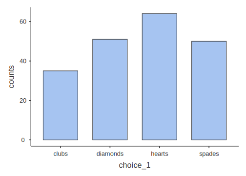

Chapter 5 Categorical data analysis
Up to this point, we have been following, roughly, the order of information set out in your main textbook by Navarro & Foxcroft (2019). We depart a little at this point as we are not going to cover the material in Chapter 6 of that book. We will cover that material in Appendix A. Nor will we cover chapter 7-9 at all. Instead, this lab manual resumes below as parallel to Chapter 10 of Navarro & Foxcroft (2019).
From the current chapter (Chapters 5) to Chapter 9, you’ll see that the point of inferential statistics is to calculate specific signal-to-noise ratios in order to see if the signal that emerges from our data is so strong over the noise (that emerges from our data) that we can confidently claim that we indeed have a signal, and not just a bunch of noise.
We will start with the first of these tests: the chi-square test. Thus, this chapter shows you how to use jamovi to conduct analyses when your outcome variable consists of counts of nominal (categorical) data (e.g., the number of men vs. women who voted in a particular district, where the proportions are known to be about 50/50). The topic is covered in much more detail in your main textbook Navarro & Foxcroft (2019Chapter 10).
There are several versions of the chi-square test, but we will only cover two here: the \(\chi^2\) goodness-of-fit test, and the \(\chi^2\) test of association. The former is used is when you want to compare your sample data to known population proportions (like the voting example above), and the latter is when you want to compare the counts of two groups against one another. For example, perhaps you wanted to know whether the morning-beverage preferences (coffee, tea, or juice) were the same across men and women. A \(\chi^2\) test of association could answer this (assuming you collected the data, of course).
The first we will cover here is the goodness-of-fit test.
5.1 Chi-square goodness-of-fit test
In each chapter in this manual, there will be one basic analysis, and often, one, more advanced analysis. The basic analysis will always be a quick way to do the analysis presented in the relevant chapter in Navarro & Foxcroft (2019). The more advanced analysis will be the UC Berkeley graduate-admissions data from 1973 (a famous data-analysis case).
5.1.1 Basic: The Cards data
This is from Section 10.1.1 of Navarro & Foxcroft (2019), and the data set is labeled Randomness.csv. Thus: \((\equiv)\) > Open > Data Library > learning statistics with jamovi > randomness.csv.
In this imaginary experiment (with imaginary data), participants were asked to mentally choose a single card from an imagined deck of cards, and then a second card. The idea was to figure out if people really could do things at random, or if they had preferences for different suits (clubs, diamonds, hearts, or spades).
5.1.1.1 Inspecting
To start, you just want to get a bird’s-eye view of the relative proportions across the two choices. So you to go Exploration > Descriptives, drag the first choice over to the Variables box and check Frequency tables. We also unchecked all the other options for descriptive statistics. You should see what is below in Figure (5.1).

Figure 5.1: Setting the parameters in jamovi for getting the counts on the first choice of the cards data from Navarro & Foxcroft (2019).
Your output should look like the following:
##
## DESCRIPTIVES
##
## FREQUENCIES
##
## Frequencies of choice_1
## ────────────────────────────────────────────────────
## Levels Counts % of Total Cumulative %
## ────────────────────────────────────────────────────
## clubs 35 17.50000 17.50000
## diamonds 51 25.50000 43.00000
## hearts 64 32.00000 75.00000
## spades 50 25.00000 100.00000
## ────────────────────────────────────────────────────It looks like people have a preference for hearts over clubs, but this could be due to chance. We need to test this.
5.1.1.2 Hypothesizing
So referring to Chapter 9 in Navarro & Foxcroft (2019), first we need to create null and research hypotheses. Stated in English, it would be as follows:
\(H_0:\) There is no suit preference among participants
Mathematically, it would come out as below, where we state each outcome as a probability, P:
\(H_0:P_{clubs}=P_{diamonds}=P_{hearts}=P_{spades}\)
Or even better for this particular inferential test:
\(H_0:P=(.25, .25, .25, .25)\)
This last one means that you are predicting that the probability for each suit is equal.
Conversely, the research hypothesis would be as follows:
\(H_1\): Participants have a preference for one or more of the suits over one or more of the others
\(H_1:P \neq (.25, .25, .25, .25)\)
5.1.1.3 Testing
Carrying out the chi-square goodness-of-fit test is ultimately quite easy in jamovi. But we will spend a little extra time explaining the results since this is the first inferential test in the lab manual.
To carry out the test, Go to the Analyses tab across the top, click Frequencies, and then choose N Outcomes \(\chi^2\) Goodness of fit. This is shown in the screenshot below, Figure 5.2.
Figure 5.2: Choosing the chi-square goodness-of-fit test from the Frequencies menu in jamovi.
Then slide the variable choice_1 over to the Variable box. Also click the Expected counts box. The parameters should be as you see below in Figure 5.3.

Figure 5.3: Setting the parameters in jamovi for doing the chi-square goodness-of-fit test on first choice of the cards data from Navarro & Foxcroft (2019).
The output should look like the following:
##
## PROPORTION TEST (N OUTCOMES)
##
## Proportions - choice_1
## ──────────────────────────────────────────────────
## Level Count Proportion
## ──────────────────────────────────────────────────
## clubs Observed 35 0.1750000
## Expected 50.00000 0.2500000
##
## diamonds Observed 51 0.2550000
## Expected 50.00000 0.2500000
##
## hearts Observed 64 0.3200000
## Expected 50.00000 0.2500000
##
## spades Observed 50 0.2500000
## Expected 50.00000 0.2500000
## ──────────────────────────────────────────────────
##
##
## χ² Goodness of Fit
## ───────────────────────────────
## χ² df p
## ───────────────────────────────
## 8.440000 3 0.0377419
## ───────────────────────────────You might also want to plot this in jamovi. The way to do this is by checking the Barplot box in Descriptives. See Figure 5.4 below for the right parameter settings.
Figure 5.4: Setting the parameters in jamovi for creating a barplot for the first choice of the cards data from Navarro & Foxcroft (2019).
The results will look like the following:
##
## DESCRIPTIVES
5.1.1.4 Interpreting
First, note that since we asked for Expected counts, jamovi told use the exact numbers that would have been expected under the null hypothesis. This was 50 for each group since there were a total of 200 participants, and we assumed that there was an equal chance of any card suit being preferred (25% for each suit).
The observed values are the counts that we actually got from the participants.
This is all easy enough to read from the first table. The second table gives us the results of the inferential test.
The degrees of freedom is for the chi-square goodness-of-fit test is the total number of categories minus 1. There were 4 card suits, minus 1, therefore, df = 3. The test statistic gave us an obtained value of 8.44. The test statistic is the following formula:
\[\chi^2=\sum_{i=1}^{k}\frac{(O_{i}-E_{i})^2}{E_i}\]
The obtained value is 8.44, which is what you get after you refer to the table above, and substitute the Os and the Es with the Observed and Expected values (respectively) for each card suit (i) found in the table above, .
What is important about the degrees of freedom (3 in this case) is that this figure sets up the particular chi-squared distribution that the test statistics of 8.44 will be evaluated against. This distribution is the solid line in Figure 10.1 in Navarro & Foxcroft (2019, sec. 10.1.5, p. 217). But we reproduce it below.

What does this distribution represent? Think of it this way: If you carried out an infinite number of these experiments with the cards and the four suits, this \(\chi_2\) distribution (with degrees of freedom equal to 3) represents the relative probabilities (areas under the curve) of getting different ranges of observed values (mapped across the x-axis) under the assumption that the null hypothesis is underlyingly true.
It turns out that for this inferential test (\(\chi^2\) goodness of fit) with three degrees of freedom, obtained values of 7.815 or greater would be less than 5% likely to occur if the null hypothesis were true. The value 7.815 is the critical value, where that 5% area extending out to the right starts. Our obtained value of 8.44 is greater than that (7.815) of course. In fact, if we were to calculate the area under the curve to the right of 8.44, we would get 3.8%, which is our p-value up above (an exact p-value).
Our p-value is less than our pre-set \(\alpha\) (alpha) level of .05, so we are given the “green light” to reject the null hypothesis. What does that actually mean?
Normally, one doesn’t talk about rejecting the null hypothesis, per se. Rather, the expression was statistically significant suffices because it is shorthand for a more complex process that all researchers are assumed to understand. What is this process. By way of illustration, here is an overwrought, but accurate way of rejecting the null hypothesis:
The obtained value for our chi-square goodness-of-fit test was 8.44. If we replicated this exact experiment an infinite number of times with new samples (thereby giving us 3 degrees of freedom each time) and the null hypothesis were underlyingly true, then obtained values of 8.44 or greater would occur only about 3.8% of the time. Since it is the industry standard in Psychology not to accept a risk of being wrong greater than 5%, we are comfortable accepting the 3.8% risk here, thus concluding (at least provisionally) that it’s not our data that are strange, but rather that the null hypothesis itself. That is, it seems to be an inappropriate assumption in this case, so we provisionally reject it. Something other than the null hypothesis is more likely to be true, namely (assuming we have designed things appropriately), the research hypothesis. Since there are more than 2 categories (df>1), the exact form of the research hypothesis still needs to be determined. This may be determined either through post-hoc or planned comparisons.
5.1.1.5 Reporting
Actually writing out results takes a far different form.
Here, we will briefly discuss how to write out the results of statistics in APA format since this is the first time we cover it in the lab manual. But a more detailed account is provided in section 12.4.1.3.2.
Test statistics in APA format always follow the pattern below.
- a letter (in italics) representing the test statistic used
- parentheses that enclose the degrees of freedom
- an equals sign
- the obtained value of the test statistic
- a comma
- the letter p in italics
- one of three symbols: =, <, or >
- a p-value
Thus, the results of our chi-square analysis would be reported as \(\chi^2 (3)=8.44,p=.038\).
But we cannot stop there. A proper report in a results section only includes the test results as parentheticals to more everyday prose.
Our results were statistically significant, \(\chi^2 (3)=8.44,p=.038\). It appears that when people imagine a card picked randomly from a deck of cards, they have preferences for certain suits over others. For whatever reason, the most likely candidate disproportionality in our case is that they have a strong inclination to imagine a card from hearts (32%) and a strong disinclination to imagine a card with clubs (17.5%). The other two suits had observed frequencies that matched their expected frequencies. A post-hoc analysis would be required to determine the exact relationships with more certainty.
5.1.2 Advanced: Student admissions at UC Berkeley
For the more advanced analysis, we will work with a well-known data set from Bickel, Hammel, & O’Connell (1975) that analyzed the 1973 graduate-school admissions data to the University of California - Berkeley. The data set contains data on how many men vs. women were given or denied admission across the six largest graduate schools at Cal (Cal is the nickname for the university).
At first blush, it looks like men are being favored over women in graduate admissions. But we want to find out whether this is really true.
5.1.2.1 Opening data
This data set is available as one of the data sets that comes with base-R. Since jamovi is built on top of R, it has no problem opening R data sets. In fact, the module called R data sets includes this data set. Install this module if you haven’t already (see the end of Section 1.2 for how to do this).
Once you have done this, all you have to do is click \((\equiv)\) > Open > Data library > R data sets > UCBAdmissions (the file is near the bottom of the list). Your data should look like what is below.
| Admit | Gender | Dept | Freq |
|---|---|---|---|
| Admitted | Male | A | 512 |
| Rejected | Male | A | 313 |
| Admitted | Female | A | 89 |
| Rejected | Female | A | 19 |
| Admitted | Male | B | 353 |
| Rejected | Male | B | 207 |
| Admitted | Female | B | 17 |
| Rejected | Female | B | 8 |
| Admitted | Male | C | 120 |
| Rejected | Male | C | 205 |
| Admitted | Female | C | 202 |
| Rejected | Female | C | 391 |
| Admitted | Male | D | 138 |
| Rejected | Male | D | 279 |
| Admitted | Female | D | 131 |
| Rejected | Female | D | 244 |
| Admitted | Male | E | 53 |
| Rejected | Male | E | 138 |
| Admitted | Female | E | 94 |
| Rejected | Female | E | 299 |
| Admitted | Male | F | 22 |
| Rejected | Male | F | 351 |
| Admitted | Female | F | 24 |
| Rejected | Female | F | 317 |
The data give us the numbers of men versus women who were admitted and rejected by academic department (the six largest departments only). We have what we need to start an analysis of whether men are being favored over women in admissions.
5.1.2.2 Preparing
There are two things that you are going to need to do in order to prepare this data for a full analysis:
- Calculate relative proportions of men versus women who applied to graduate school at Cal; and
- Filter the data in order to count admissions only, as well as filter by department in six of the cases (Departments A-F).
5.1.2.2.1 Calculating relative proportions
The default null hypothesis for a chi-square goodness-of-fit test is that all outcomes are equally likely.54 So in the admissions data we have, it would assume that men and women are equally likely to be admitted (50/50); the analysis would expect equal numbers of men and women admitted under the null hypothesis.
There is a big problem with the admissions data at Cal, however. Namely, not only did the numbers of men vs. women who applied to graduate school at the university differ overall (2,691 vs. 1,835), but the numbers also differed by department. So if more men apply than women, you’d expect more men to be accepted than women, even if the university (or department) is admitting men and women without bias towards one or the other. In fact, if equal numbers of men and women were accepted, you’d likely have to conclude that the university was favoring women in admissions.
As noted in Navarro & Foxcroft (2019, sec. 10.1.8), this test offers a way to correct for this. We will need to do so here. To start, we will need to carry out some Descriptives on the data. First, we go to the Analysis tab, and click Descriptives. We move the variable Freq over to the Variables box, and the variable Gender over to the Split by box. Then we make sure that the only box that is checked is Sum under Central Tendency. This will add up the numbers for Admitted and Rejected applicants across all departments, but divided by Gender. See Figure 5.5 below.
Figure 5.5: Setting the jamovi parameters for summing overall numbers of men versus women (admitted plus rejected) across the university for the Cal Berkeley admissions sample data set from R Core Team (2021).
You should see the following results when you do this. Note that these are the numbers that we provided above for men and women across the six largest graduate-school programs at the university.
##
## DESCRIPTIVES
##
## Descriptives
## ─────────────────────────
## Gender Freq
## ─────────────────────────
## Sum Female 1835
## Male 2691
## ─────────────────────────With these numbers, you will need to write down the relative percentages of men vs. women in the data set. Thus, percentage of men applicants overall (across departments) is as follows:
\[\%\;males_{overall}=\frac{2691}{2691+1835} = \frac{2691}{4526}=.5945=59.45\%\]
And therefore, for women, it’s as follows:
\[\%\;females_{overall}=1-.5945=.4055=40.55\%\]
You will need these numbers soon enough.
Now we need to get these figures by academic department (A through F). To do this, we just do the same as in Figure 5.5 above, but we also slide Dept into the Split by box. See Figure 5.6 below. In fact, you’ll probably want to get the variables in the Split by box in the order shown in the figure, so you may need to slide Gender out, then slide Dept and then Gender back in a again.

Figure 5.6: Setting the jamovi parameters for summing the numbers of men versus women (admitted plus rejected) by academic department at the university for the Cal Berkeley admissions sample data set (UCBAdmissions) from R Core Team (2021).
You should see the numbers below.
##
## DESCRIPTIVES
##
## Descriptives
## ─────────────────────────────────
## Dept Gender Freq
## ─────────────────────────────────
## Sum A Female 108
## Male 825
## B Female 25
## Male 560
## C Female 593
## Male 325
## D Female 375
## Male 417
## E Female 393
## Male 191
## F Female 341
## Male 373
## ─────────────────────────────────So now we need to calculate the relative percentages of males versus females applying to each department.
- Applicants to Department A
- \(\%_{males}=\frac{825}{825+108}=\frac{825}{933}=.8842=88.42\%\); and therefore,
- \(\%_{females}=1-.8842=.1158=11.58\%\)
- Applicants to Department B
- \(\%_{males}=\frac{560}{560+25}=\frac{560}{585}=.9573=95.73\%\); and therefore,
- \(\%_{females}=1-.9573=.0427=4.27\%\)
- Applicants to Department C
- \(\%_{males}=\frac{325}{325+593}=\frac{325}{918}=.3540=35.4\%\); and therefore,
- \(\%_{females}=1-.3540=.6460=64.6\%\)
- Applicants to Department D
- \(\%_{males}=\frac{417}{417+375}=\frac{417}{792}=.5265=52.65\%\); and therefore,
- \(\%_{females}=1-.5265=.4735=47.35\%\)
- Applicants to Department E
- \(\%_{males}=\frac{191}{191+393}=\frac{191}{584}=.3271=32.71\%\); and therefore,
- \(\%_{females}=1-.3271=.6729=67.29\%\)
- Applicants to Department F:
- \(\%_{males}=\frac{373}{373+341}=\frac{373}{724}=.5152=51.52\%\); and therefore,
- \(\%_{females}=1-.5152=.4848=48.48\%\)
We are done with calculating relative proportions of applicants by gender. Now we need to create some filters.
5.1.2.2.2 Filtering
Due to a quirk in jamovi, in the sole case of chi-square goodness-of-fit tests, it was most convenient to save 7 different jamovi (.omv) files. We did this after we created each filter (See section 2.5.2 for how to filter data).
In the first filter, we wanted to filter in all the rows that say Admitted under Admit, and filter out all the rows that have Rejected under Admit. We left the variable Dept alone for the first filter. This filter gave us the counts for men and women who were admitted to the six largest graduate schools at Cal.
This was easy to do. We just typed the following into the filter function:
=Admit==‘Admitted’
(you saw this kind of formula before in Section 2.5.2).
Your result should look something like Figure 5.7 below.
![Creating a filter for the UCBAdmissions data set [@R-base] that restricts the rows to the counts that refer to admissions only (no rejections).](images/CategoricalData/ChisquareGoodFitFilterForAdmittedAcrossUniversity.png)
Figure 5.7: Creating a filter for the UCBAdmissions data set (R Core Team, 2021) that restricts the rows to the counts that refer to admissions only (no rejections).
As noted above, there is a strange quirk having to do with the interaction between filters and chi-square goodness-of-fit tests, so we had to save this file as CategoricalData_UCBAdmissions_AllDepartments.omv.
But we needed six more filters, each of which would restrict the analysis to one department (i.e., one of A through F).
To create the first for Department A, we took the CategoricalData_UCBAdmissions_AllDepartments.omv file and saved it as CategoricalData_UCBAdmissions_DepartmentA.omv [\((\equiv)\) > Save As].
After doing this, we could modify Filter 1 by adding to its conditions. So we re-opened Filter 1, and clicked the \(+\) sign on the far, right-hand sign of the line with \(f_{x}\). This creates a second line \(f_{x}\) line in addition to the one above it. It is pre-pended by the word and. The expression AND is called a conjunction in Boolean logic, and it means “this also must be true.” Ultimately, this means that jamovi will return only the rows where condition 1 (only Admitted") AND condition 2 (only department A) are both true. You can see the results of this in Figure 5.8 below.
![Creating a filter for the UCBAdmissions data set [@R-base] that restricts the rows to the counts that refer to admissions only (no rejections) AND Department A only (filtering out Departments B-F).](images/CategoricalData/ChisquareGoodFitFilterForAdmittedInDepartmentA.png)
Figure 5.8: Creating a filter for the UCBAdmissions data set (R Core Team, 2021) that restricts the rows to the counts that refer to admissions only (no rejections) AND Department A only (filtering out Departments B-F).
Note that there are two new columns now: Filter 1 and F1 (2). jamovi does this automatically. F1 (2) means that it’s the second part of Filter 1. Also note that all rows are filtered out except for admissions in Department A.
Now we could save this file as another, named CategoricalData_UCBAdmissions_Department.omv (for Department B, obviously). Then, we just changed the second condition to the following:
and Dept==‘B’
We needed to repeat this so that we ended up with seven .omv files, each with its own unique filter. Thus:
-CategoricalData_UCBAdmissions_AllDepartments.omv
-CategoricalData_UCBAdmissions_DepartmentA.omv
-CategoricalData_UCBAdmissions_DepartmentB.omv
-CategoricalData_UCBAdmissions_DepartmentC.omv
-CategoricalData_UCBAdmissions_DepartmentD.omv
-CategoricalData_UCBAdmissions_DepartmentE.omv
-CategoricalData_UCBAdmissions_DepartmentF.omv
5.1.2.3 Testing
Now that we had the relative proportions and the necessary filters, we could proceed to the chi-square goodness-of-fit test to determine whether there was actually gender discrimination in graduate admissions at Cal Berkeley in 1973.
First, we wanted to look at the graduate admissions by gender across the university. So we opened the jamovi file CategoricalData_UCBAdmissions_AllDepartments.omv. First, to reduce clutter, we clicked the “eye” icon in the filter menu to remove from view all the rows that were filtered out. All that remained visible were admissions. Then we went to the Analyses tab, and selected Frequencies > One Sample Proportion Tests: N Outcomes - \(\chi^2\) Goodness of fit. When we opened this, we click-and-dragged to the right the left-hand side of the window headed with Proportion Test (N Outcomes). This made the data appear on the left (as in Figure 5.9 below).
We then dragged the Gender variable to the Variable box, and the Freq variable over to the Counts (optional) box.55
Next, we needed to add in the expected proportions manually. Recall, this is what we did in Section 5.1.2.2.1. The expected proportions will be the same proportions of males versus females in the total applicant pool. The observed values will be the proportions of men versus women that were actually admitted. To the extend that these proportions differ is the extent to which you have evidence of gender discrimination… possibly.
The proportion of male applicants was 59.45%, which we can type in (59.45) to the Expected Proportions box under Male. The complementary proportion for females was 40.55%, so we type in 40.55 under Female. For good measure, we also checked the Expected Counts box.
See Figure 5.9 below to get an idea of what our settings were.
Figure 5.9: jamovi paramaters for a Chi-square goodness-of-fit test on admitted male versus female graduate applicants at UC Berkeley in 1973.
The results of the chi-square are significant, which you can see below. From this analysis, it looks like males are being preferred in admissions over females. This is because although 712 females were expected to be admitted (under the null hypothesis that there was no discrimination), only 557 were. In contrast, although only 1,043 males were expected to be admitted (if there had been no discrimination), 1,198 were admitted (higher than the expected number). This discrepancy was statistically significant: \(\chi^2 (1)=56.5,\;p<.001\).
##
## PROPORTION TEST (N OUTCOMES)
##
## Proportions - Gender
## ─────────────────────────────────────────────────
## Level Count Proportion
## ─────────────────────────────────────────────────
## Female Observed 557 0.3173789
## Expected 711.6525 0.4055000
##
## Male Observed 1198 0.6826211
## Expected 1043.3475 0.5945000
## ─────────────────────────────────────────────────
##
##
## χ² Goodness of Fit
## ────────────────────────────────
## χ² df p
## ────────────────────────────────
## 56.53196 1 < .0000001
## ────────────────────────────────But we had more detailed information than just overall admissions by gender. We had information by department. This required six different analyses, where we will use the six remaining files that we created since the Expected Proportions values differed for each department (the ones we calculated in section 5.1.2.2.1).
We will not display how to set the parameters in jamovi here. We will simply display the results.
5.1.2.3.1 Department A
This file is CategoricalData_UCBAdmissions_DepartmentA.omv. Recall from section 5.1.2.2.1 above that the proportion of women applying was 11.58%, whereas the proportion of men applying was 88.42%. The results of the chi-square goodness-of-fit test for Department A are below.
##
## PROPORTION TEST (N OUTCOMES)
##
## Proportions - Gender
## ─────────────────────────────────────────────────
## Level Count Proportion
## ─────────────────────────────────────────────────
## Female Observed 89 0.1480865
## Expected 69.59580 0.1158000
##
## Male Observed 512 0.8519135
## Expected 531.40420 0.8842000
## ─────────────────────────────────────────────────
##
##
## χ² Goodness of Fit
## ───────────────────────────────
## χ² df p
## ───────────────────────────────
## 6.118683 1 0.0133760
## ───────────────────────────────The chi-square goodness-of-fit test for department A was significant: \(\chi^2 (1)=6.12,\;p=.013\). But if you look at observed versus expected values, you’ll see that more females (89) were admitted than expected (70), and fewer males (512) were admitted than expected (531).
5.1.2.3.2 Department B
This file is CategoricalData_UCBAdmissions_DepartmentB.omv. The proportion of women applying was 4.27%, whereas the proportion of men applying was 95.73%. The results of the chi-square goodness-of-fit test for Department B are below.
##
## PROPORTION TEST (N OUTCOMES)
##
## Proportions - Gender
## ─────────────────────────────────────────────────
## Level Count Proportion
## ─────────────────────────────────────────────────
## Female Observed 17 0.04594595
## Expected 15.79900 0.04270000
##
## Male Observed 353 0.95405405
## Expected 354.20100 0.95730000
## ─────────────────────────────────────────────────
##
##
## χ² Goodness of Fit
## ─────────────────────────────────
## χ² df p
## ─────────────────────────────────
## 0.09536925 1 0.7574591
## ─────────────────────────────────The results of the analysis for Department B were not significant: \(\chi^2 (1)=0.0954,\;p=.76\). Department B seems to have been favoring neither men nor women in their admissions. One more female was admitted (17) than expected (16), and one less male was admitted (353) than expected (354).
5.1.2.3.3 Department C
This file is CategoricalData_UCBAdmissions_DepartmentC.omv. The proportion of women applying was higher this time, at 64.6%. In contrast, the proportion of men applying was down to 35.4%. The results of the chi-square goodness-of-fit test for Department C are below.
##
## PROPORTION TEST (N OUTCOMES)
##
## Proportions - Gender
## ────────────────────────────────────────────────
## Level Count Proportion
## ────────────────────────────────────────────────
## Female Observed 202 0.6273292
## Expected 208.0120 0.6460000
##
## Male Observed 120 0.3726708
## Expected 113.9880 0.3540000
## ────────────────────────────────────────────────
##
##
## χ² Goodness of Fit
## ────────────────────────────────
## χ² df p
## ────────────────────────────────
## 0.4908472 1 0.4835496
## ────────────────────────────────Department C had a similar outcome to Department B. There seems to have been no gender discrimination in their admissions decisions: \(\chi^2 (1)=0.491,\;p=.48\). Six fewer women were accepted (202) than expected (208), and six more men were accepted (120) than expected (114). Not much of a difference.
5.1.2.3.4 Department D
This file is CategoricalData_UCBAdmissions_DepartmentD.omv. The proportion of women applying was roughly even with the men this time, at 47.35%. The proportion of men applying was 52.65%. The results of the chi-square goodness-of-fit test for Department D are below.
##
## PROPORTION TEST (N OUTCOMES)
##
## Proportions - Gender
## ────────────────────────────────────────────────
## Level Count Proportion
## ────────────────────────────────────────────────
## Female Observed 131 0.4869888
## Expected 127.3715 0.4735000
##
## Male Observed 138 0.5130112
## Expected 141.6285 0.5265000
## ────────────────────────────────────────────────
##
##
## χ² Goodness of Fit
## ────────────────────────────────
## χ² df p
## ────────────────────────────────
## 0.1963286 1 0.6577007
## ────────────────────────────────Department D also seems not to have been engaging in any kind of gender discrimination: \(\chi^2 (1)=0.196,\;p=.66\). Four more women were admitted (131) than expected (127), and four fewer men were accepted (138) than expected (142). Again, not much of a difference.
5.1.2.3.5 Department E
This file is CategoricalData_UCBAdmissions_DepartmentE.omv. The proportion of women applying was higher again, at 67.29% of applicants. The proportion of men applying was down to 32.71% for this department. The results of the chi-square goodness-of-fit test for Department E are below.
##
## PROPORTION TEST (N OUTCOMES)
##
## Proportions - Gender
## ────────────────────────────────────────────────
## Level Count Proportion
## ────────────────────────────────────────────────
## Female Observed 94 0.6394558
## Expected 98.91630 0.6729000
##
## Male Observed 53 0.3605442
## Expected 48.08370 0.3271000
## ────────────────────────────────────────────────
##
##
## χ² Goodness of Fit
## ────────────────────────────────
## χ² df p
## ────────────────────────────────
## 0.7470133 1 0.3874235
## ────────────────────────────────Department E as well, seems not to have engaged in gender discrimination: \(\chi^2 (1)=0.747,\;p=.39\). Five more men were accepted (53) than expected (48), and five fewer women were accepted (94) than expected (99).
5.1.2.3.6 Department F
This file is CategoricalData_UCBAdmissions_DepartmentF.omv. The proportion of women applying to this department was about even with the men again, at 48.48%. The proportion of men applying was about equal at 51.52%. The results of the chi-square goodness-of-fit test for Department F are below.
##
## PROPORTION TEST (N OUTCOMES)
##
## Proportions - Gender
## ────────────────────────────────────────────────
## Level Count Proportion
## ────────────────────────────────────────────────
## Female Observed 24 0.5217391
## Expected 22.30080 0.4848000
##
## Male Observed 22 0.4782609
## Expected 23.69920 0.5152000
## ────────────────────────────────────────────────
##
##
## χ² Goodness of Fit
## ────────────────────────────────
## χ² df p
## ────────────────────────────────
## 0.2513001 1 0.6161611
## ────────────────────────────────And finally, the same is true of Department F: no apparent gender discrimination with \(\chi^2 (1)=0.251,\;p=.62\). Two more females were accepted (24) than expected (22), in contrast with the males, where two fewer were accepted (22) than expected (24).
5.1.2.4 Reporting
See Appendix A for a review of how to report statistics in APA format.
One could report the null findings from the first pair of randomly generated variables in the following way:
At first blush, it looked as if there had been gender discrimination in the the graduate-admissions process at the University of California - Berkeley in 1973. Indeed, when we applied a chi-square goodness-of-fit test to the counts of male vs. female admissions across the six largest departments (against the respective numbers that applied), we obtained significance, \(\chi^2 (1)=56.5,\;p<.001\). Men were being admitted at a rate about 10% higher than expected, whereas women were being admitted at a rate about 10% lower than expected. However, when we analyzed the admissions rate by department (the six largest departments only), we found that only one of these departments showed a significant discrepancy between the expected and actual admission rates between the sexes. This was department A, \(\chi^2 (1)=6.12,\;p=.013\); all other ps > .38. Surprisingly however, it was also clear that females were being favored over males in department A.
5.1.2.5 Conclusion
In addition to providing some insight in how to do a chi-square goodness-of-fit test, it is actually also a famous case of Simpson’s Paradox (in fact, it is listed in the Wikipedia entry for the term). This is a phenomenon where an apparent pattern at one level gets cancelled out or even reverses itself at another level. In the 1973 graduate-school admissions data at UC Berkeley, they found evidence for preference for men if they looked at all graduate schools together, but found a small bias for women when they analyzed the data by department.
Apparently, large numbers of men had been applying to schools with high admission rates (low competition), as long as they met minimal requirements, whereas women had been applying in larger numbers to departments that had lower admission rates, even among qualified candidates (high competition). This resulted in what looked to be, on aggregate, a bias for men being accepted to graduate school compared to women, but was really only the result of lots of men getting into less competitive programs.
These data were originally reported by Bickel, Hammel, & O’Connell (1975). A link to this reference (only) can be found at the Science website here. But if you are a student at Texas A&M, you can obtain the article here.
5.2 Chi-square test of independence
This test looks at whether the counts across two variables are random or whether the variables are contingent. For instance, are coffee drinkers just as likely to be larks (“morning people”) as non-coffee drinkers? Are left-handers just as likely to be diagnosed with dyslexia as right-handers?
The key difference between this test and the goodness-of-fit test, is that this one looks for balance across two variables (as established by overall group size), whereas the goodness-of-fit test involved only one variable tested against known proportions.
5.2.1 Basic: The Chapek 9 data
The Chapek 9 data from Navarro & Foxcroft (2019, sec. 10.2) is from the imagination of the primary author of that book. But it is a good one for illustration. You can obtain the data set from jamovi by clicking \((\equiv)\) > Open > Data library > learning statistics with jamovi > Chapek 9.
The story goes that the residents of Chapek 9 (a city) are all robots, and to gain access, you must be a robot. So the robots design a test to determine if someone is a robot or a human.56 The test that the robots devised asked w(whether a candidate to enter the city preferred puppies, flowers, or large, properly formatted data files. But the validity of the test needed to be checked against data that were collected (in someone’s imagination).
5.2.1.1 Inspecting
The first thing to do is create a cross-tabulation of the data. Go to the Analyses tab and click Frequencies > Contingency Tables > Independent Samples \(\chi^2\) test of association. species should go in the Columns box, and choice should go in the Rows box.57 The parameters you need to choose to follow Navarro & Foxcroft (2019) are as depicted in Figure 5.10 below.

Figure 5.10: Parameter settings in jamovi for a chi-square test of independenc on the Chapek 9 data in Navarro & Foxcroft (2019).
The result should look like the following:
##
## CONTINGENCY TABLES
##
## Contingency Tables
## ───────────────────────────────────────────────────────────
## choice robot human Total
## ───────────────────────────────────────────────────────────
## puppy Observed 13 15 28
## Expected 13.53333 14.46667 28.00000
##
## flower Observed 30 13 43
## Expected 20.78333 22.21667 43.00000
##
## data Observed 44 65 109
## Expected 52.68333 56.31667 109.00000
##
## Total Observed 87 93 180
## Expected 87.00000 93.00000 180.00000
## ───────────────────────────────────────────────────────────
##
##
## χ² Tests
## ───────────────────────────────────────────────────────────
## Value df p
## ───────────────────────────────────────────────────────────
## χ² 10.72157 2 0.0046972
## χ² continuity correction 10.72157 2 0.0046972
## N 180
## ───────────────────────────────────────────────────────────
##
##
## Nominal
## ────────────────────────────────
## Value
## ────────────────────────────────
## Phi-coefficient NaN
## Cramer's V 0.2440580
## ────────────────────────────────For good measure, we also included a barplot with species as a Split by variable in the Descriptives menu (see section 5.1.1.1 above for the right parameter settings). You just additionally slide species into the Split by column.
##
## DESCRIPTIVES
In the data set you can see that there were 180 participants, 87 who turned out to be robots (in reality), and 93 who turned out to be human. The main question is whether the responses to flower, puppy, and large, properly formatted data file were equally proportioned across both humans and robots. If so, the test is no good at distinguishing them. But if not, then it might have some value as a shibboleth.
The expected values are calculated by dividing the total number of participants (human and robot) who chose, say, puppy, and dividing by the total (180, then applying that ratio to the population of each group. There were 28 participants who chose puppy, which comprises \(\frac {28}{180}=15.55\%\) So the expected value for humans was \(Expected_{human}=93 \times.1555=14.5\). For robots, this was \(Expected_{robot}=87 \times.1555=13.5\). The same is done for the other two categories (flowers and data files). These are then compared to the observed values for each group through the formula for the chi-square test for independence, which we will get to shortly.
5.2.1.2 Hypothesizing
The null hypothesis in this case is that the proportion of preferences for each object across species is the same. Or \(H_0\):
\(P_{human_{puppy}}=P_{robot_{puppy}}\)
\(P_{human_{flower}}=P_{robot_{flower}}\)
\(P_{human_{ProperlyFormattedDataFile}}=P_{robot_{ProperlyFormattedDataFile}}\)
The research hypothesis would be that any one or more of those equivalencies is false.
5.2.1.3 Testing
The formula for this test is in Navarro & Foxcroft (2019, sec. 10.2.1, p. 227), and is as follows:
\[\chi^2=\sum_{i=1}^{r} \sum_{j=1}^{c} \frac{(O_{ij}-E_{ij})^2}{E_{ij}}\]
NOTE: The double sigmas \(\sum_{i=1}^{r} \sum_{j=1}^{c}\) are not as scary as they look. Just replace r with rows (object preferences) and and c with columns (species) and you will see that these are just the combinations of object preferences by species. That is, i takes the values puppy, flower, and large, properly formatted data file, whereas j takes on the values human and robot.
Walking through this might help. You start with \(i=robot\) on the left-hand sigma, then choose \(j=puppy\) in the right-hand sigma. With those two values for i and j (i.e., robots who chose puppies), you can calculate the formula on the right. After you do that, you keep the sigma on the left constant (i.e., \(i=robot\)) and change the sigma on the right by one to flower (i.e., robots who chose flowers, or \(j=flower\)). Then you plug the appropriate numbers into the formula again to get another number. That gets added to the last one you calculater. Then you do large, properly formated data files. When you have exhasted all the values of j for robots, you then change the sigma on the left to refer to humans (i.e., \(i=human\)). Then you start all over again for the different values of j. When you have exhausted all the values for j on every vaue of i, you are done.Plugging in the Expected and Observed values into the formula renders the obtained value. The degrees of freedom are determined by the total number of data points minus the number of constraints. In this case, it’s \((r-1)(c-1)=(3-1)(2-1)=(2)(1)=2\). See Navarro & Foxcroft (2019, sec. 10.2.1, pp. 227-228) for more detail.
The degrees of freedom define the particular chi-square distribution that the obtained value gets evaluated against.
Obviously, this chi-square distribution looks very different from the one above with 3 degrees of freedom (with the cards data). The chi-square distribution in general has the unique feature of changing its shape dramatically depending on the degrees of freedom, something that doesn’t change very much with t-distributions (next chapter).
But nothing changes with respect to its function. It defines the probabilities of an infinite set of test outcomes (from an infinite set of study replications) with 2 degrees of freedom, all under the assumption that the null hypothesis is true. With 2 degrees of freedom, you can see that the most common obtained value under the null hypothesis would be 0, with progressively diminishing probabilities for more extreme obtained values. Moreover, the critical value on this distribution (for \(\alpha=.05\)) is 5.991. This means that obtained values of 5.991 or greater are less than 5% likely to occur if the null hypothesis is true.
The chi-square test statistic came out as follows: \(\chi^2 (2)=10.7,p=.005\). Thus, our obtained value was quite improbably if the null hypothesis were true. As a result, we have enough confidence to reject the null hypothesis and resort to the research hypothesis.
Without going in to too much detail, it is pretty clear from the test results, the table, and the figure that the robots were over-choosing flower and the humans were over-choosing large, properly formatted data files.
This effect was not that strong as Cramér’s V was only .244. According to Cohen (1988), who was the great grandfather of effect sizes, this would be a small-ish effect size.
5.2.1.4 Reporting
Borrowing from Danielle Navarro’s imagination here a little bit, this is how we could write this up:
We carried out a chi-square test of independence on the Chapek 9 data set. The results were significant, \(\chi^2 (2)=10.7,p=.005\). There were roughly as many robots (87) as humans (93) who responded. Responses to puppy looked to be about equally likely across the two groups. However, humans responded with a disproportionate number of preferences for large, properly formatted data files compared to robots, whereas the robots seemed to respond with a disproportionate number of preferences for flower. It turns out that the robots had a policy to murder humans who answered honestly and identified themselves as human with a puppy or flower response. Many of the humans had caught on to this policy, and therefore chose file out of concern for their safety. The unusual number of robot preferences for flower is harder to explain, but is partly due to the fact that humans were avoiding that choice out of fear for their lives.
5.2.2 Advanced: The Narcissistic Personality Inventory
We will use the for-fun, online version of the Narcissistic Personality Inventory (NPI) to illustrate how to perform more realistic version of this test in jamovi. This data is part of the Dark Triad. You can take the dark-triad survey yourself for fun here.
5.2.2.1 Obtaining the data
The data and the codebook are available both available online here. You need to scroll down to the row with Narcissistic Personality Inventory and click the link on the far right-hand side labeled NPI. This will download a .zip file with the files you need. Students in PSYC 301 at Texas A&M can access these files in eCampus under Lab: Lab manual data sets > CategoricalData_NPI.
5.2.2.2 Preparing
One could analyze a combination of almost any of two of the variables Q1 through Q40. The variables don’t have names other than Q##. Respondents simply choose one of two answers that appear on the screen. We arbitrarily chose the following questions to analyze in chi-square test of independence: Q16 and Q24. These two questions carried the following two response possibilities according to the codebook (i.e., codebook.txt):
- Q16
- 1 = I can read people like a book
- 2 = People are sometimes hard to understand
- Q24
- 1 = I expect a great deal from other people
- 2 = I like to do things for other people
Thus, presumably, such an analysis would look at whether one’s self-assessed ability to understand others’ behavior (theory of mind) predicts how self-centered one is. Because… why not?
The first step was to re-code Q16 according to the codebook (as above). We clicked the Data tab and double-clicked variable Q16. We typed “Theory of Mind” into the Description box, and then typed over “1” with I can read people like a book and “2” with People are sometimes hard to understand. Then we decided, in order to reduce the width of the contingency table, to replace these rather long labels with the shorter versions: Good Theory of Mind and Poor Theory of Mind, respectively. Finally, we made sure that the Data type drop-down menu was set to text. These settings are illustrated below in Figure 5.11.
Figure 5.11: Settings in jamovi for the variable Q16 from the online version of the Narcisisstic Personality Inventory from Raskin & Terry (1988).
Figure 5.12 below shows how to do the same thing for Q24 (replacing I expect a great deal from other people with Self-centered, and I like to do things for other people with Selfless.
Figure 5.12: Settings in jamovi for the variable Q24 from the online version of the NPI from Raskin & Terry (1988).
5.2.2.3 Hypothesizing
The null hypothesis in this case is that the proportion of those with a self-assessed good theory of mind are distributed equally across those who are relatively self-centered vs. those who are not. Or \(H_0\):
\(P_{good.theory.of.mind_{self-centered}}=P_{bad.theory.of.mind_{self-centered}}\)
\(P_{good.theory.of.mind_{selfless}}=P_{bad.theory.of.mind_{selfless}}\)
… or alternatively:
\(P_{self-centered_{good.theory.of.mind}}=P_{selfless_{good.theory.of.mind}}\)
\(P_{self-centered_{bad.theory.of.mind}}=P_{selfless_{bad.theory.of.mind}}\)
The research hypothesis would be that any one or more of those equivalencies is false.
This is all we needed for an analysis.
5.2.2.4 Testing
First, we reported some descriptive statistics for the survey. We wanted the counts for Q24 (“Selflessness”) split by the levels of Q16 (“Theory of Mind”). This would give us a birds-eye view of the responses out of 11,186 (as of the writing of this lab manual). See section 3.2.3 for instructions on how to do this yourself.
##
## DESCRIPTIVES
##
## Descriptives
## ──────────────────────────────────────────
## Q16 Q24
## ──────────────────────────────────────────
## N Poor Theory of Mind 6174
## Good Theory of Mind 5012
## Missing Poor Theory of Mind 19
## Good Theory of Mind 17
## ──────────────────────────────────────────
Thus, of the 11,186 responses, about 55% reported having a relatively poor theory of mind (6,174), and about 45% (5,012) reported having a relative good theory of mind. Less than half of one percent failed to provide any response, equally distributed across both levels of Theory of Mind. A cursory glance at the bar plot suggests that those reporting a relatively poor theory of mind are more likely to self-report selflessness than those reporting a relatively good theory of mind. But plots can deceive. We needed to carry out an inferential test to see if this might be a real difference or not.
Carrying this procedure out was much more straightforward than the chi-square goodness-of-fit test in the last section. We started by clicking the Analyses tab, and then Frequencies. Drag Q16 to the Rows box and Q24 to the Columns box (or vice-versa; it doesn’t matter).
Also click the following options.
- Statistics:
- Tests -\(\chi^2\)
- Nominal
- Phi and Cramér’s V
- Cells:
- Counts
- Observed counts
- Expected counts
- Percentages
- Row
- Column
- Counts
See Figure 5.13 for a visual illustration of this.
Figure 5.13: Parameter settings in jamovi for a chi-square test of independence on the online NPI data, originally from Raskin & Terry (1988).
Choosing these options gave us the following output:
##
## CONTINGENCY TABLES
##
## Contingency Tables
## ─────────────────────────────────────────────────────────────────────────────────────
## Q16 Selfless Self-centered Total
## ─────────────────────────────────────────────────────────────────────────────────────
## Poor Theory of Mind Observed 4521 1653 6174
## Expected 4278.638 1895.362 6174.000
## % within row 73.22643 26.77357 100.00000
## % within column 58.32043 48.13628 55.19399
##
## Good Theory of Mind Observed 3231 1781 5012
## Expected 3473.362 1538.638 5012.000
## % within row 64.46528 35.53472 100.00000
## % within column 41.67957 51.86372 44.80601
##
## Total Observed 7752 3434 11186
## Expected 7752.000 3434.000 11186.000
## % within row 69.30091 30.69909 100.00000
## % within column 100.00000 100.00000 100.00000
## ─────────────────────────────────────────────────────────────────────────────────────
##
##
## χ² Tests
## ──────────────────────────────────────
## Value df p
## ──────────────────────────────────────
## χ² 99.80693 1 < .0000001
## N 11186
## ──────────────────────────────────────
##
##
## Nominal
## ─────────────────────────────────
## Value
## ─────────────────────────────────
## Phi-coefficient 0.09445891
## Cramer's V 0.09445891
## ─────────────────────────────────5.2.2.5 Interpreting
The results were “highly” significant, with \(\chi^2 (1)=99.8,p<.001\). We could tentatively conclude that having a good or poor theory of mind does affect your selflessness. Those with poor theories of mind showed higher counts of selflessness (4,521) than expected (4,279), whereas those with good theories of mind showed unexpectedly lower counts of selflessness (3,231) than expected (3,473). The converse was true of the counts of Self-centered. However, the significance may have been primarily an artifact of having such a large sample size (11,186). The effect-size measures (the \(\phi\) coefficient and Cramér’s V) were both quite small at .095.
5.2.2.6 Reporting
This is how it might have been written up:
We took variables Q16 (“Theory of Mind”: Good vs. Poor) and Q24 (“Selflessness”: Selfless vs. Self-centered) and subjected the relative counts of these levels to a \(\chi^2\) test of independence. All else being equal, the null hypothesis would predict that 69.3% of the respondents for both good and poor theories of mind would have reported that they were selfless, and 30.7% would have reported that they were self-centered. The results were significant [\(\chi^2 (1)=99.8,p<.001\)] with those who self-reported a poor theory of mind also reporting unexpectedly higher counts of selflessness (4,521, or 73.2%) than 69.3% would predict (4,279), and those who self-reported a good theory of mind also reporting unexpectedly lower counts of selflessness (3,231, or 64.5%) than 69.3% would predict (3,473). The effect size was negligible, however, with \(\phi=.095\). Thus, the statistical significance could be an artifact of the large sample (N= 11,186).
Incidentally, this is a good example of how a bar plot (see above) can deceive the statistically naïve. The difference in the heights of the bars was probably due mostly to the fact that there were more people overall who self-reported as having a relatively poor theory of mind (6,174 versus 5,012).
It’s also an example of how a large sample size can exaggerate the inferential statistics by inflating obtained values (and thereby deflating p-values). Results should only be interpreted in conjunction with an effect size (since effect sizes are designed to temper the interpretation of test statistics by being immune to sample sizes).
5.3 Outside help on chi-square
For whatever reason, there is less overall outside help on analyzing frequency data in jamovi.
Still, to reinforce your learning here, you can go to datalab.cc (Poulson, 2019). The first video to watch is #45, which discusses analyzing count data in general. We only covered how to do two analyses here, though five are possible under Frequencies in jamovi. Texas A&M students can find these datalab.cc tutorials in the LinkedIn Learning series, available through the Howdy! portal.
Your textbook (Navarro & Foxcroft, 2019) obviously has a chapter on chi-square. But it also has a short tutorial on how to create contingency tables in Section 6.1.58
5.3.1 Goodness-of-fit test
datalab.cc also provides a review of how to do chi-square goodness-of-fit tests. You can find it as video #47.
This is also in your main textbook (Navarro & Foxcroft, 2019, sec. 10.1).
5.3.2 Chi-square test of independence
The datalab.cc video for the chi-square test of independence (“Association”) is video #48.
This is also in your main textbook (Navarro & Foxcroft, 2019, sec. 10.2).
References
This isn’t even likely for any data you ever collect, unless you are analyzing coin flips, or dice throws (which you are unlikely to be doing).↩︎
The reason that Counts is optional is that it is summarized data. Thus, it is not “tidy,” per se. One could also do this chi-square if each row corresponded to one person, without the Count variable. This would have been a data set with 4,526 rows. In fact, this is normally the way data is collected. In this case, jamovi would have just counted the relevant numbers of rows instead of having them provided in an extra variable.↩︎
This is clearly a spin on Alan Turing’s (1950) Turing Test↩︎
You could do this the other way around; it’s the same. But this is the way it was done in Navarro & Foxcroft (2019). We do the same here so as to reduce confusion.↩︎
The data for this little tutorial in Navarro & Foxcroft (2019) are from In the Night Garden, a television show for really young children that isn’t shown in the US, but the main author (Bolger) got to see extensively while living in Canada when his son was very young. It has achieved some sort of cult status even among adults, who often find it so remarkably bizarre as to be entertaining even for them (at least for short stretches). The website for it is here in case you are interested in a truly strange children’s show.↩︎